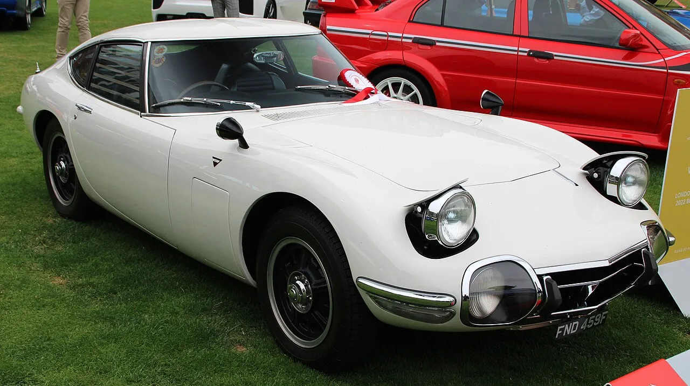
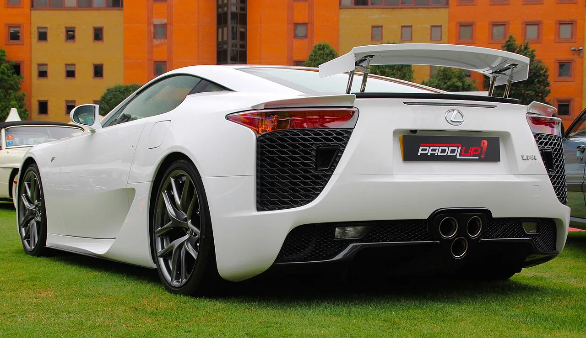
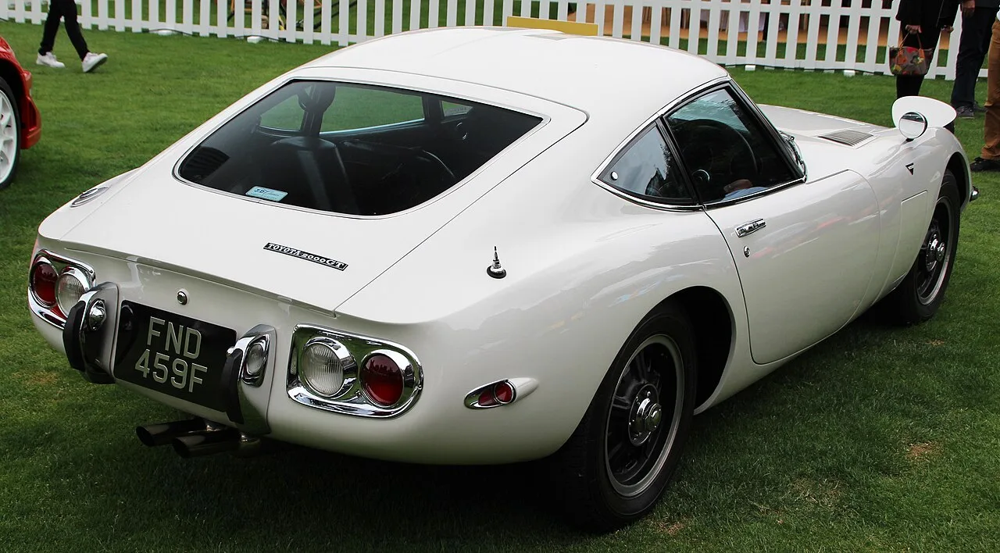

▲ 2010년대 초 판매된 클래식 렉서스 LFA — 이 V10 슈퍼카는 정식 컨버터블을 내놓은 적이 없다. GR GT는 같은 이름을 이어받아 새로 부활하는 전동화 LFA와 플랫폼을 공유한다
전동화가 대세인 요즘, 토요타는 정반대의 길을 걷는 차를 준비하고 있습니다. 완전히 연소기관 기반으로 설계된 고성능 스포츠 쿠페 GR GT가 그 주인공입니다. 렉서스가 새롭게 부활시키는 전동화 LFA와 플랫폼을 공유하며, GT3 레이스카의 기반이 되도록 설계된 이 차에 최근 흥미로운 소식이 더해졌습니다. 일본 자동차 매거진 매거진X와 카센서 보도에 따르면, 표준 쿠페와 레이스카 버전 외에 타르가 탑 형태의 컨버터블까지 준비되고 있다는 것입니다.
1. GR GT는 정확히 어떤 차인가
GR GT는 토요타의 고성능 브랜드 'GR(Gazoo Racing)'을 단 플래그십 스포츠 쿠페입니다. 가장 큰 특징은 순수 내연기관 기반으로 설계됐다는 점입니다. 전동화가 스포츠카 영역까지 파고든 요즘 흐름과는 결이 다른 선택입니다. 여기에 렉서스가 새롭게 부활시키는 전동화 LFA와 플랫폼을 공유한다는 점, 그리고 처음부터 GT3 규격의 레이스카로 개발될 수 있도록 설계됐다는 점에서 순수 레이싱 혈통을 강조하는 모델입니다. 흥미로운 점은 GR GT 자체는 내연기관을 고집하면서도, 플랫폼을 나눠 쓰는 형제 차종은 오히려 전동화 슈퍼카라는 것입니다.
2. 왜 컨버터블이 화제인가 — LFA와 2000GT가 못한 것

▲ 토요타 2000GT(1967-1970) — 이 전설적인 클래식 스포츠카 역시 정식 양산 컨버터블 버전은 없었다
이번 보도에서 가장 흥미로운 대목은 컨버터블 버전 그 자체입니다. 토요타·렉서스의 역사를 통틀어 최고의 순간으로 꼽히는 두 모델, 클래식 렉서스 LFA와 토요타 2000GT 모두 정식 양산 컨버터블 모델을 내놓은 적이 없습니다. LFA는 쿠페로만 판매됐고, 1960년대 일본차의 위상을 세계에 알린 2000GT 역시 마찬가지였습니다. 만약 GR GT가 타르가 탑 컨버터블로 나온다면, 클래식 LFA와 2000GT가 해내지 못했던 '오픈탑 경험'을 고객에게 처음 제공하는 모델이 되는 셈입니다.

▲ 클래식 렉서스 LFA 후면부 — GR GT는 새로 부활하는 전동화 LFA와 플랫폼·레이싱 혈통을 공유하면서도, 정작 클래식 LFA조차 만들지 않았던 오픈탑 버전을 시도하는 것으로 알려졌다
3. 타르가 탑을 택한 이유 — 가볍고 효율적인 선택
보도에 따르면 이 컨버터블은 완전 개방형 로드스터가 아니라 타르가 탑 형태로 계획되고 있습니다. 지붕 중앙 패널만 탈착하는 타르가 탑 방식은, 완전 오픈형 컨버터블보다 차체 강성을 확보하기 쉽고 무게 증가도 최소화할 수 있다는 장점이 있습니다. 실제로 이 버전은 "가장 가볍고 비용 효율적인 옵션"으로 소개됐는데, 이는 GR GT가 애초에 트랙 성능을 중시하는 차인 만큼 오픈탑을 더해도 경량성을 포기하지 않겠다는 설계 철학이 반영된 것으로 풀이됩니다.
4. 고성능 버전까지 — LFA 뉘르부르크링 에디션의 계보
컨버터블 외에도 표준 쿠페보다 강화된 고성능 버전이 함께 준비되고 있는 것으로 알려졌습니다. 과거 렉서스가 클래식 LFA의 한계를 더 밀어붙인 '뉘르부르크링 에디션'을 만들었던 것처럼, GR GT의 고성능 버전도 추가 마력과 에어로 부품, BBS 단조 휠, 재조정된 서스펜션 세팅을 갖춘 한정판 형태로 나올 가능성이 거론됩니다. 이렇게 되면 GR GT 라인업은 표준 쿠페, 타르가 탑 컨버터블, 고성능 버전, GT3 레이스카까지 총 4가지 바리에이션으로 완성될 전망입니다.

▲ 토요타 2000GT 후면부 — 1960년대 일본차의 위상을 세계에 알린 이 쿠페 역시 정식 컨버터블 양산 모델은 없었다
5. 아직 확인되지 않은 것들
아직 루머 단계이지만, 토요타·렉서스의 역사에서 가장 상징적인 두 모델조차 시도하지 않았던 오픈탑을 GR GT가 실현한다면 그 자체로 화제가 될 만합니다. 전동화 흐름 속에서도 순수 내연기관을 고집하는 이 차가, 공식 공개 이후 어떤 모습으로 나타날지 지켜볼 대목입니다.